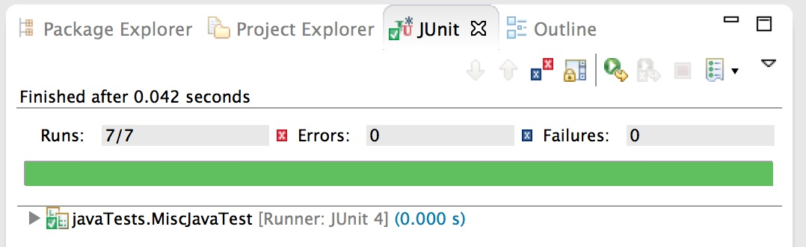

Unit Testing Techniques
Introduction. This page is much more verbose than most pages on this website. Usually I limit myself to the final result rather than the "figuring-it-out." But unit testing is something I feel passionate about and, despite all the talk about it which has long been going on in the software development community, I keep running into buggy code which has not properly been unit tested. While I'm not quite a whole-hearted advocate of test-driven development, I will say that in my own experience I don't see enough test-certified development. Hopefully this page will help others work out some of the problems they've encountered as they try to write good unit tests.
If there's one rock on which I've learned to build my software development, it's the unit test. Or rather, it's a large collection of unit tests, covering many different parts of the application. With that you can be pretty confident when it comes to refactoring and bug fixing. And when you need to add new functionality, unit testing gives you a chance to methodically verify both normal and boundary conditions.
But every good thing comes with a price (or so they say), and when it comes to unit testing "they" are right. What I mean is that writing good unit tests is not always easy. Sometimes it's hard, and it's a skill you learn over time. Over time, I've learned a few things about unit testing. On this page I offer some of the techniques that over the years have helped me make sure I have a nice suite of unit tests I can depend on.
Note: Sometimes below I assume you are using Junit (specifically version 4), but every other testing framework I've come across has complimentary functions.
Always Make Sure Your Unit Test Fails
Imagine you're testing a drug that is supposed to prevent the flu. You have a sample of the drug, a person who has volunteered to help you test your drug, and a sample of a flu virus. You expose the person to the flu virus, you administer the drug to this selfless person, and you see that the person doesn't get the flu. You conclude that your drug works and you start selling the drug.
Good for you. But suppose people buying your drug get the flu? You'd have to figure out what went wrong in your testing. In this overly-simplistic scenario, one part of the process that might have gone wrong is that maybe the flu virus you used for the test was dead when you exposed your volunteer to it. That's why your volunteer didn't get the flu--not because of your experimental drug.
One way to avoid this error in the future would be to expose some other even more selfless person to your flu virus, making sure this volunteer does get the flu. Only in this case could you conclude that your first volunteer didn't get the flu thanks to your drug.
The same with unit testing. So often, in my own work as well as in others', I've seen unit tests that don't actually test what their authors think they're testing. The application code had a bug in it, but so did the unit test which was meant to validate that code. Therefore the test always passed, failing to detect the bug.
You can avoid this trap by following the advice in this heading--always make sure your unit test fails. Only once it has failed should you modify the test, or your code, so that it passes.
Just off the top of my head I can think of three easy ways to fall into this trap. I'll share those three ways with you now.
For all of these situations, let's imagine that you've written some code with a slight bug in it.
Listing 1: Some bad code
public boolean isAThing(Object thing) {
if(thing instanceof Thing) {
return false;
}
return true;
}
Contrary to its name and intention, the method returns false when the input is a Thing, and true when it is not a Thing.
It's a dumb mistake, I agree, but if you think it's not one you would ever make, please substitute for it some other bug you've made at some point in your career. (And if you think you've never written a bug in your life, please retire now--I'm tired of having to clean up after you.)
Trap 1: Forgetting @Test
Suppose you have a pre-existing test class. You run the unit tests and they all pass. You write the unit test below, you run the tests, they all pass, and you commit the code and head for home early after such a good day's work.
Listing 2: A test missing its @Test
public void forgotTestAnnotation() {
String input = "";
boolean actual = isAThing(input);
assertFalse(actual);
}
Obviously a String is not a Thing object. Why did your unit tests all pass? Because the test you've just written is not a unit test! The test wasn't even run. You forgot to put "@Test" at the start of the test method.
However, if you'd written your assert as "assertTrue(actual)" instead of "assertFalse(actual)", and expected your new unit test to fail, you would have noticed that it did not fail and investigated. You wouldn't have been able to leave work early, but at least you would have avoided committing buggy code.
Trap 2: Using Java assert( ) instead of JUnit assertTrue( )
The following unit test compiles and passes without error. In Eclipse you get the pretty green stripe that tells you to go, go, go ahead and commit that code. But you're more than likely to end up with egg on your face if you do.
Listing 2: The wrong assert( )
@Test
public void testAssertInsteadOfUnitAssert() {
Thing input = new Thing();
boolean actual = isAThing(input);
assert(actual);
}
Don't tell me this can't happen. I've seen it. In our application, months after the code was written and submitted with its "unit tests," I noticed a major difference between what the class was supposed to do and what it was actually doing. I had a quick look at all the unit tests, saw what they were trying to test, and couldn't believe that they weren't failing. Why were they passing? Answer: The asserts were failing, but our testing framework wasn't paying attention to those. Since no Junit assertions were being thrown, the framework assumed everything was hunky-dory.
Trap 3: Cutting-and-Pasting from an existing test
I won't take up your time with a detailed example of this mistake. If you're an experienced developer, you know the dangers of cut-and-paste. I myself have written many a bad unit test by copying a pre-existing unit test in the same class, giving the new test a new name, and then forgetting something important, such as changing the expected value, or forgetting to change the method actually being tested. Fortunately, I can always catch this mistake by insisting that all my tests fail first, then making the appropriate changes so that they pass.
@Before and @BeforeClass
The Junit annotations @Before and @BeforeClass differ both in functionality and syntax. (Generally, what applies to @Before applies also to @After; and the same goes for @BeforeClass and @AfterClass.)
@BeforeClass and @AfterClass. Use @BeforeClass for an "expensive" method that should be run once before all tests in the class. By "expensive" I mean costly in terms of time or memory--for instance, reading a configuration file. The @BeforeClass method is run once before every test class; if what it sets up is so expensive that this cost is too high, you will have to explore setting up test suites--a set of test classes that are run in unison. Use @AfterClass to "tear down" something you've "set up" in the @BeforeClass method--but note that, in my experience, at least, very often this is not necessary.
Listing 3: An example of @BeforeClass
@BeforeClass
public static void doSomethingOnceBeforeEachTestClass() {
SomeClass.readConfigFile();
}
Note that, as Listing 3 illustrates, @BeforeClass can be used only for public static void methods, which means they are called before anything in your test class is instantiated, as well as before your @Before methods are invoked. Keep this in mind when you're trying to figure out why your unit tests aren't working. I've been bitten by that bug a few times.
@Before and @After. Use @Before to set up something one time before each individual test method. Reinitializing an instance field is a good example of this.
Listing 4: An example of @Before
public SomeTest {
private ClassBeingTested inputClass;
@Before
public void doSomethingOnceBeforeEachTestMethod( ) {
inputClass = new ClassBeingTested( );
}
@Test
public void test() {
String output = inputClassdoSomething( );
// ...
}
}
The access of a method marked with @Before must be public; if it isn't you'll get a runtime exception with a message like the following:
Listing 5: Exception message if @Before method is not public
java.lang.Exception: Method doSomethingOnce() should be public
Use @After to undo anything performed during a test. I rarely have a need for this annaotation.
Using StringReader to Avoid Writing File Input for Testing
Frequently I want to verify the functionality of a method that reads a file. Often such a method takes a BufferedReader which points to the file. In these circumstances I usually have three choices: (1) create a test file and in my test method open the file with a BufferedReader, passing that object to the method I'm testing; (2) change the method to take a String object, which contains the contents of the file, and modify all callers of the method accordingly; or (3) in my unit test, insert the test file contents into a String object, create a BufferedReader which points to this String object, and invoke the method I'm testing with that.
Now, it might be interesting to consider when each of these options is the best course of action. Yet I'm not going to do that--this page is already too wordy as it is. I'm simply going to tell you how to implement Option 3, if you decide that is the best option for your situation. (You'll find discussion of Option 1 in the next section below.)
To sum up, the problem is this: you have a String, and you want a BufferedReader. How do you do that? Enter StringReader.
Listing 6: Creating a BufferedReader from a String
BufferedReader reader = new BufferedReader(new StringReader("hi"));
Getting the Location of a Test File or Other Resource
Often a unit test requires some sort of resource such as an external file--input for a method that you're testing, for example. In acquiring the resource, you need the path, but you don't want to hard-code the path, since the path on one developer's machine won't necessarily be identical to the path on another developer's machine.
For most of this discussion I'm assuming you run your tests from within an IDE such as Eclipse or IntelliJ Idea, rather than from the command line.
The simplest solution to this problem is to locate the resource relative to the project location on the current machine.
Listing 7: Locating resource by location relative to the project
public class miscJavaTest {
private static final String PROJECT_PATH = (new File("")).getAbsoluteFile().getAbsolutePath();
private static final File RESOURCE_FILE = new File(PROJECT_PATH, "resources");
@Test
public void testResourcePath() {
assertTrue(RESOURCE_FILE.exists());
}
}
The code above will find a folder (or a file) called "resources" in the project directory. The snippet new File("") serves as the idiom for finding the project's "present working directory."
The problem is that the "present working directory" may differ between IDE's--Eclipse and IntelliJ get different locations. This may not be a problem if you are working solo, or if everyone on your team is using the same IDE. But, otherwise, you'll need to find another solution.
If you want your unit tests to work on different IDEs, it might occur to you to try using an environment variable. Maybe you're thinking that every developer on the team could have a $PROJECT_HOME variable, and the unit tests could get that variable via something like static final String PROJECT_HOME = System.getenv("PROJECT_HOME"). It sounds as though that should work, but it doesn't, really. In Eclipse, for example, you need to set that environment variable for every test configuration.
If you don't like behavior which is dependent on the IDE, you can use getResourceAsStream( ) or getResource( ). This approach isn't perfect, but it's the best one that I've been able to find.
Listing 8: Weak implementation of getResource( ) for locating test resources
public class MiscJavaTest {
private static final String INPUT_FILE_PATH = "resources/input.txt";
private static final Class<MiscJavaTest> CLASS = MiscJavaTest.class;
@Test
public void testGetResourcesWithBadExceptionOutput() {
String contents = null;
try {
URI uri = CLASS.getClassLoader().getResource(INPUT_FILE_PATH).toURI();
File file = new File(uri);
// Using org.apache.commons.io.FileUtils
contents = FileUtils.readFileToString(file);
} catch (Exception e) {
// TODO Auto-generated catch block
e.printStackTrace();
};
assertEquals("Got it!", contents);
}
}
// Exception output:
java.lang.NullPointerException
at javaTests.MiscJavaTest.testGetResourcesThrowsNPE(MiscJavaTest.java:29)
at sun.reflect.NativeMethodAccessorImpl.invoke0(Native Method)
A little verbosity can give you exception output which is a considerably more useful, as the next listing demonstrates.
Listing 9: A better implementation of getResource( ) for locating test resources
public class MiscJavaTest {
private static final String INPUT_FILE_PATH = "resources/input.txt";
private static final Class<MiscJavaTest> CLASS = MiscJavaTest.class;
@Test
public void testGetResourcesThrowsNPEWithUsefulExceptionOutput() {
String contents = null;
try {
URI uri = CLASS.getClassLoader().getResource(INPUT_FILE_PATH).toURI();
File file = new File(uri);
// Using org.apache.commons.io.FileUtils
contents = FileUtils.readFileToString(file);
} catch (Exception ex1) {
try {
URI uri = CLASS.getClassLoader().getResource("").toURI();
String msg = "Could not find " + INPUT_FILE_PATH + " in " + uri.toString();
throw new IllegalStateException((msg));
} catch (URISyntaxException eURI) {
eURI.printStackTrace();
}
};
assertEquals("Got it!", contents);
}
}
// Exception output:
java.lang.IllegalStateException: Could not find resources/input.txt in file:/(full path deleted>/CodeExamples/bin/
at javaTests.MiscJavaTest.testGetResourcesThrowsNPEWithUsefulOutput(MiscJavaTest.java:53)
The only difference between this listing and the previous one occurs in the catch block. What the modified catch block is doing is something like this: "Okay, the unit test couldn't find resource X in directory path Y, so I'll print out exactly what X and Y are so that hopefully the stupid programmer can figure out how he or she messed up."
Taking a close look at the exception output in the listing above gives us a chance to briefly explain how getResource( ) works. It assumes the compilation has copied the resources folder to your "out" directory--that is, to the same location where the build puts your .class files. Then it looks for this resources folder relative to the root of this "out" directory.
Thanks to this message I was able to verify that the directory wasn't in the path given. Then I looked at the location of the resources directory in my workspace, and I saw it should actually go under the source directory, like everything else in "bin." I moved the folder and its contents there, reran the test and ...
... And the test failed again with the same message. Which brings us to the one and only downside of using getResource( )--the resource must be copied over to the build directory. Every once in a while, to get things to work correctly, you may have to rebuild the project. I did this, reran the test and ...
Hallelujah. Time to take a break.
Writing a Unit Test that Expects an Exception
And now for something completely different.
It is always smart to verify that a method throws an exception when it's supposed to. Nowadays most every unit testing framework gives you the facility to do this. This section shows two ways to do it in JUnit. Both are useful in different circumstances.
Listing 10: A method which throws an exception
// Here's a method that will throw an exception if its parameter is null.
public static void read(String input) {
if(input == null || input.isEmpty()) {
throw new IllegalArgumentException("Parameter input is null or empty.");
}
// ...
}
Listing 11: A unit test verifying a method throws an exception
// Here's a unit test that verifies the behavior of the method.
@Test(expected=IllegalArgumentException.class)
public void testNull() {
SomeClass.read(null);
}
JERRY: Add other way. Give general background. Change names of things--and test.
Listing
@Rule
public ExpectedException expectedEx = ExpectedException.none();
@Test
public void testNull() {
expectedEx.expect(IllegalArgumentException.class);
expectedEx.expectMessage("Parameter input is null or empty.");
SomeClass.read(null);
}
It is often debated about which is "better," using @Test(expected=) or the @Rule annotation approach. I would say that it depends. @Test(expected=) is short and sweet. The @Rule annotation approach is more verbose, but it lets you specify a particular exception message, which can be useful, for instance, if a parameter is passed in and tested for a number of properties, and a failure to meet any of those throws an IllegalArgumentException with a different message. Also, the @Rule annotation approach lets you specify exactly what line should throw the expected exception. Both of these aspects of the more verbose approach can sometimes be useful.